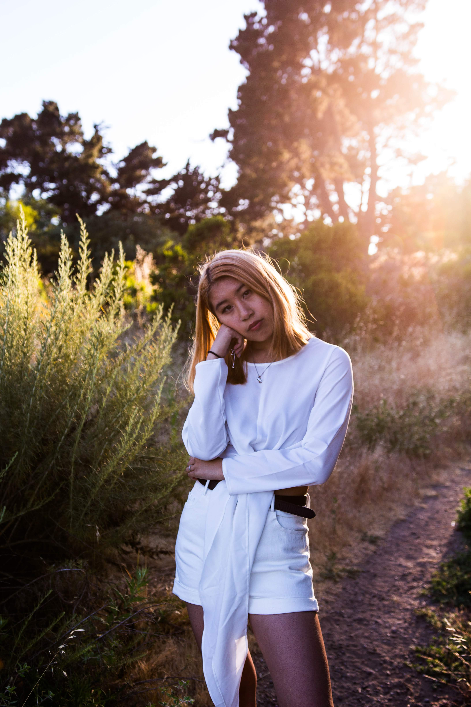
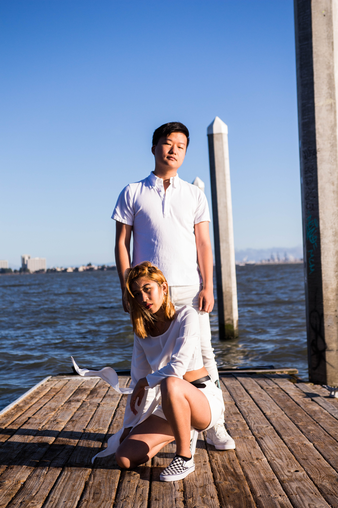
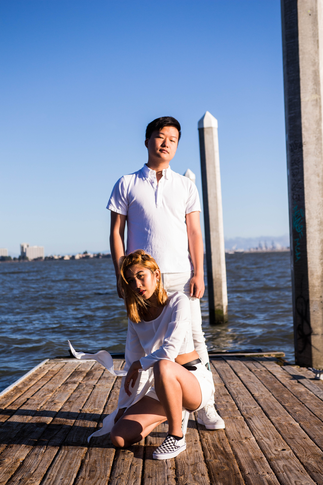
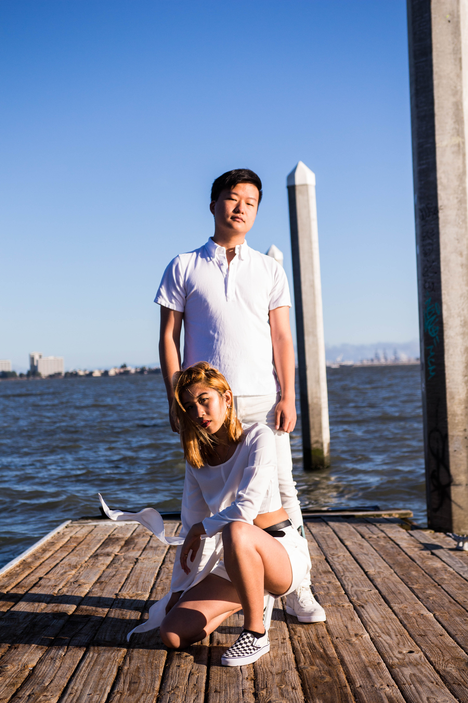
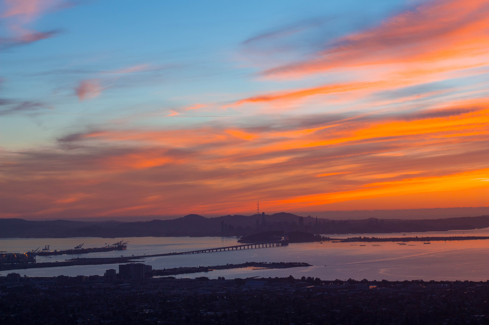
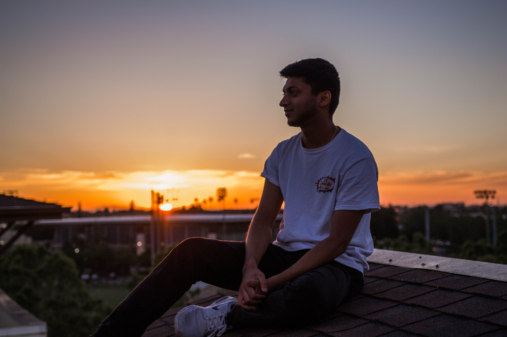

In my free time, I like to shoot landscape and portrait shots, provided someone is kind enough to be my model. Here are some of my favorites so far.
If you ever want to collaborate or just shoot pictures to destress, let me know!
Photography

 



